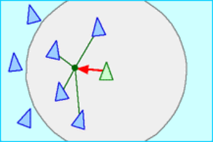
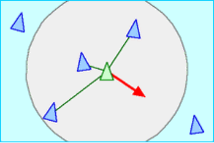
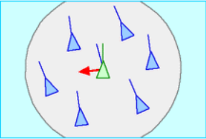

Présentation du Groupe
Gabin REDJEB
Je suis Gabin Redjeb chef de projet auto-proclamé et adoubé par tous.
J'aime faire adhérer une équipe autour d'un projet et manager la
motivation de chacun au cours du temps afin que chacun puisse donner
le meilleur de lui même au service d'un projet commun RG2A.
Alexandre GALLARDO
Je m'appelle Alexandre Gallardo et pour ma part j'entame mon premier s4,
c'est donc pour moi une nouvelle étape a franchir avec de nouvelles
dificultées avec toujours comme aboutissement l'amélioration de mes
compétences notament pour des projets en groupe comme celui ci.
Akram SAADI
Quand j'ai rejoint epita, l'infographie était l'un de mes principaux
intérêts en informatique, j'ai toujours voulu construire quelque chose
à partir de rien, réinventer la roue, transformer le traitement informatique
en images virtuelles pixel par pixel.
J'étais aussi très intéressé par la modélisation et les simulations,
c'est pourquoi j'ai choisi de faire ce projet car c'est un bon début
pour mon parcours en infographie et modélisation.
Je suis très investi dans ce projet et je suis sûr que je vais
apprendre beaucoup.
Présentation du projet
Notre projet consiste a créer une simulation d'exploration où :
12 robots doivent être capable de trouver le plus rapidement possible,
même dans les pires conditions, une cible positionnée dans une arène.
Les robots sont tous autonomes, il n’y a pas de hiérarchie et ne peuvent
communiquer entre eux qu’à partir d’une certaine distance (pour pouvoir
prévenir les autres robots de la position de la cible). La cible est
placée dans l’arène de manière aléatoire.
L'utilisateur pourra ajouter des obstacles dans l’arène permettant de
complexifier la recherche (arène modulable).
Pour mener à bien la recherche de la cible nous simulons de la vie
artificielle, en utilisant le principe de robotique d’essaim (les
comportements des essaims). Pour reproduire ces comportements, nous allons
utiliser l’algorithme de Boids.
Algorithme de Boids
Boids est un programme de vie artificielle, qui simule le comportement
de vol des oiseaux et qui permet de modéliser un comportement émergent,
c’est-à-dire une complexité comportementale qui résulte de
l'interaction d’agents individuels respectant un nombre limité de
règles simples.
Cohésion :
pour rester groupés, les robots essaient de suivre un même chemin.

Séparation :
deux robots ne peuvent pas se trouver au même endroit au même moment
donc pour éviter de s’entasser chaque robot doit s’éviter.

Alignement :
pour rester groupés les robots essaient de suivre le même chemin.

Implémentation algorithme de recherche
Pour implementer la recherche de la cible on va utiliser des algorithmes
de recherche de chemin, cela consiste a trouver un chemin entre un
point A a un point B en prenant en compte differentes contraintes.
Il en existe plusieurs mais nous allons utiliser ces deux principaux :
l'algorithne de Dijkstra qui sert a chercher le plus court chemin
lorsque l'on connait tout les chemins possible.
l'algorithme A* qui est très utile lorsque on ne connait pas les
chemins possibles.
l'implementation de ces deux algorithmes vont permettre la simulation
de condition environnementaux connu ou non.